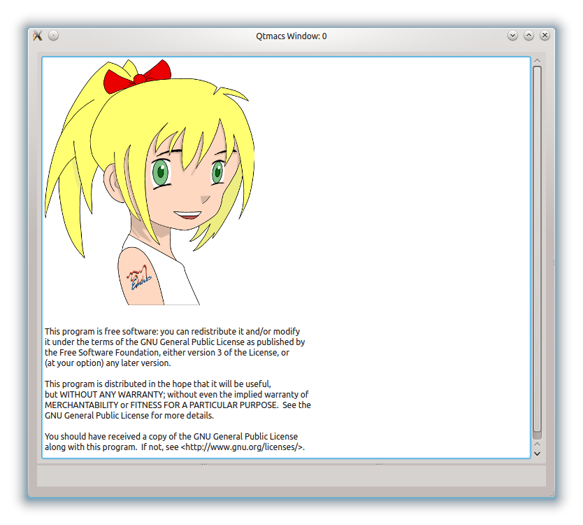

Getting Qtmacs¶
System Requirements¶
Qtmacs is currently developed with:
- Python 3.2,
- Qt 4.8,
- and PyQt 4.8.
Older versions of Qt and Python may work as well, but Python 3.x is mandatory. Qtmacs should run on any platform supported by Python, Qt, and PyQt4 (ie. at least Linux/X11, Windows, and Mac).
Note
Optional applets may require extra libraries (eg. the PDF applet requires Poppler).
Installation¶
Qtmacs requires the Qt library and the PyQt4 bindings, including the Qsci (ie. Scintilla) component of PyQt4 which may be in a separate package (eg. python3-pyqt4.Qsci or similar).
Then clone the repository and start Qtmacs with the following commands:
git clone https://github.com/qtmacsdev/qtmacs.git
cd qtmacs/bin
./qtmacs.py --load ../demos/alldemos.py
This should present you with the following startup screen.

For a brief introduction on how to use Qtmacs, please see the Qtmacs tour.